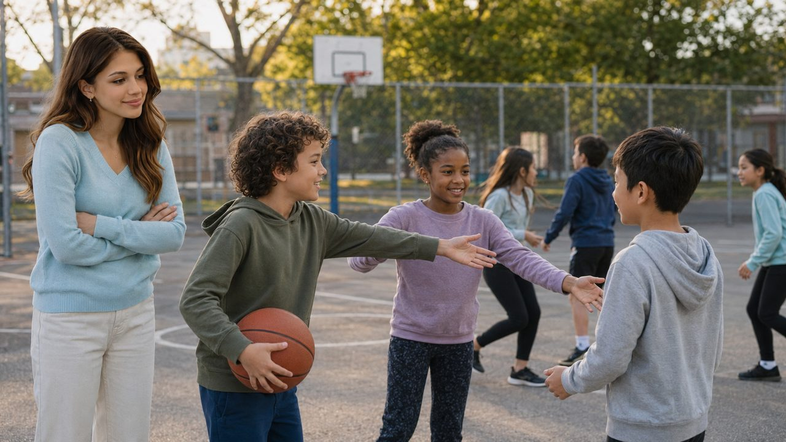

Maya's story
Belonging can be repaired
Maya watches a playground game pause when one child is left standing outside the group. A player notices, names what happened without humiliating anyone, and invites the child to join.
The children adjust the rules so everyone can participate. Maya realizes that this is more than a reminder to “be nice.” The children regulate embarrassment, consider another viewpoint, and create a workable path back into belonging.
Competence in middle childhood includes learning how to contribute, interpret social situations, handle strong feelings, and repair relationships—not performing perfectly or avoiding every conflict.
Reading lens: Look for the difference between labels and useful developmental information, and between punishment and a genuine process of repair.